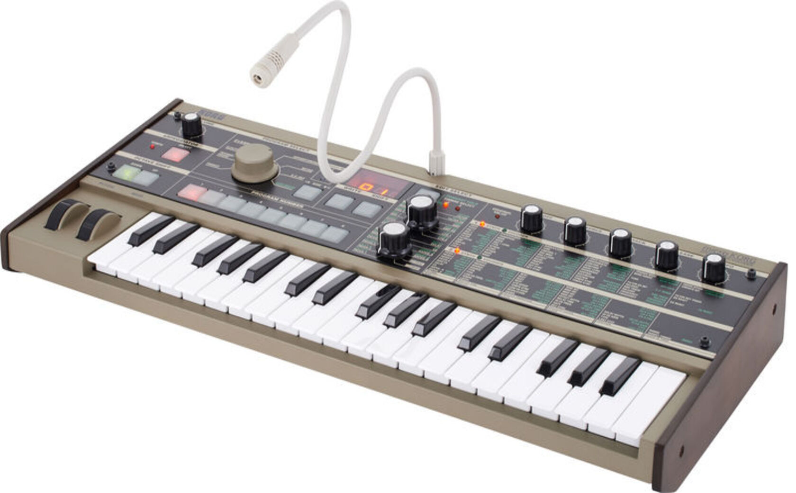

Le Microkorg de KORG
349 €
L'iconique synthétiseur portatif
4 voix
2 oscillateurs + noise generator
Vocoder 8 bandes
Effets: Modulation (3 types), Delay (3 types), EQ, Arpégiateur (6 types)
37 petites touches sensibles à la vélocité
Entrée audio
Sortie stéréo
MIDI In, Out et Thru
Fonctionnement sur pile possible
Dimensions: 524 x 232 x 70 mm
Poids: 2,2 kg
Bloc d'alimentation et microphone col de cygne incl.
Un vocodeur qui a fait ses preuves.
Le Microkorg est un vocodeur compact qui cache bien son jeu. Sous ses modestes dimensions, ce synthétiseur bénéficie d'une puissance redoutable qui boostera forcément votre créativité en vous donnant accès à d''innombrables fonctions et paramètrages. Sur le marché depuis 2002, cette machine a été utilisée par de nombreux artistes, aussi bien sur scène qu'en studio et n'a aujourd'hui plus grand chose à prouver.
La série MICRO fait très bien ce que les autres claviers font déjà et fait surtout ce que les autres ne font pas très souvent : arpégiateur programmable, vocodeur de qualité, etc...